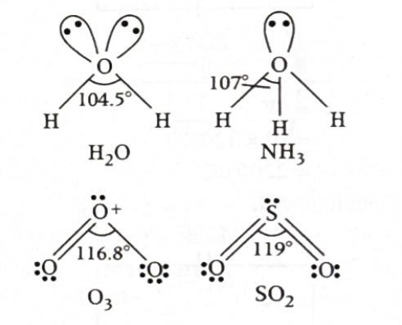
Answer: \((a)\ 4.29\ \text{Å}\)
Solution:
Sodium crystallises in a body centred cubic \((\mathrm{bcc})\) lattice. For a \(\mathrm{bcc}\) unit cell, atoms touch each other along the body diagonal.
In a body centred cubic lattice, the body diagonal passes through:
So, along the body diagonal:
\(4r = \sqrt{3}\,a\)
Therefore:
\(a = \dfrac{4r}{\sqrt{3}}\)
Given:
\(r = 1.86\ \text{Å}\)
Hence:
\(a = \dfrac{4 \times 1.86}{\sqrt{3}}\)
\(a = \dfrac{7.44}{1.732}\)
\(a \approx 4.29\ \text{Å}\)
Therefore:
\(\boxed{4.29\ \text{Å}}\)
Why this method works:
\(\sqrt{3}\,a = 4r\)
JEE / NCERT takeaway:
\(a = 2r\)
\(\sqrt{3}\,a = 4r\)
\(\sqrt{2}\,a = 4r\)
\(Z = 2\)
Helpful diagram:
Corner atom Body-centred atom Corner atom
●------------------●------------------●
r 2r r
Total contact along body diagonal = 4r
But body diagonal of cube = \(\sqrt{3}\,a\)
So, \(\sqrt{3}\,a = 4r\)
1-minute solving trick:
\(a = \dfrac{4r}{\sqrt{3}}\)
\(4 \times 1.86 = 7.44\)
\(\dfrac{7.44}{1.732} \approx 4.29\)
More intuitive memory trick:
\(\text{body diagonal} = \sqrt{3}\,a = 4r\)
Common mistakes to avoid:
Chapter / Topic / Subtopic:
Final exam-style answer:
In a body centred cubic lattice, atoms touch along the body diagonal.
Therefore:
\(\sqrt{3}\,a = 4r\)
Given: \(r = 1.86\ \text{Å}\)
So: \(a = \dfrac{4 \times 1.86}{\sqrt{3}}\)
\(a = \dfrac{7.44}{1.732} \approx 4.29\ \text{Å}\)
\(\boxed{(a)\ 4.29\ \text{Å}}\)
Quick cheatsheet:
\(a = 2r\)
\(\sqrt{3}\,a = 4r\)
\(\sqrt{2}\,a = 4r\)
\(\mathrm{sc}=1,\quad \mathrm{bcc}=2,\quad \mathrm{fcc}=4\)
\(\text{face diagonal} = \sqrt{2}\,a,\quad \text{body diagonal} = \sqrt{3}\,a\)
\(\mathrm{bcc} \Rightarrow \text{body diagonal} \Rightarrow \sqrt{3}\,a = 4r\)
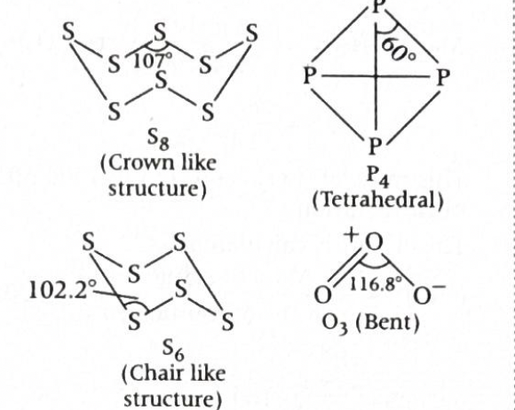
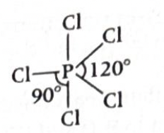
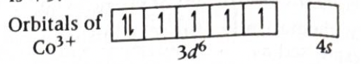
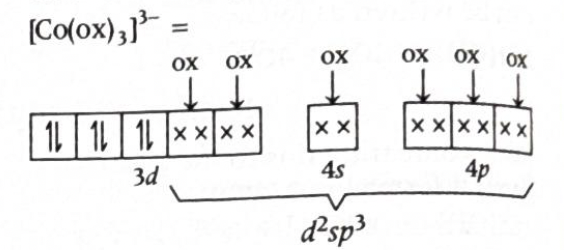
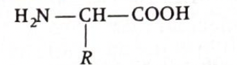
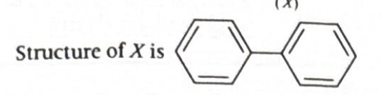
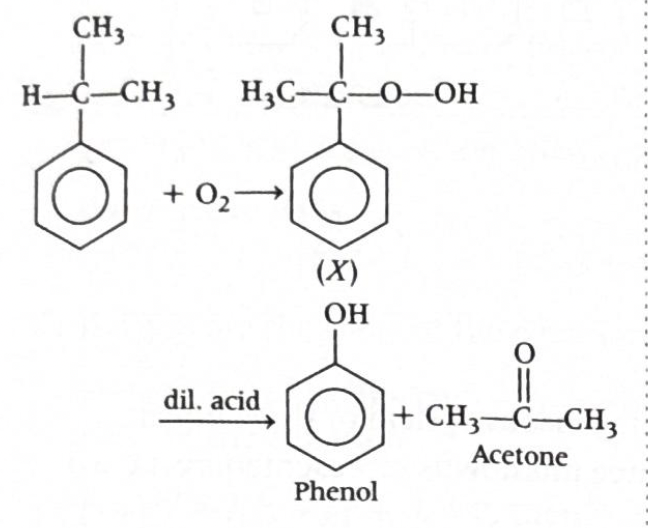
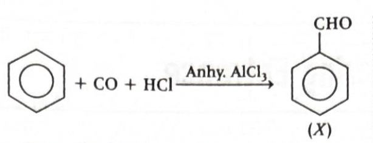
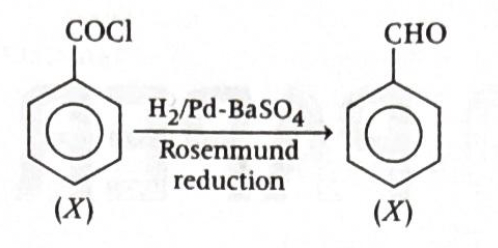
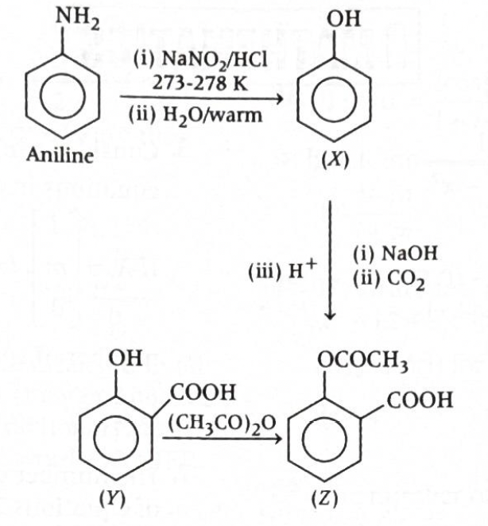
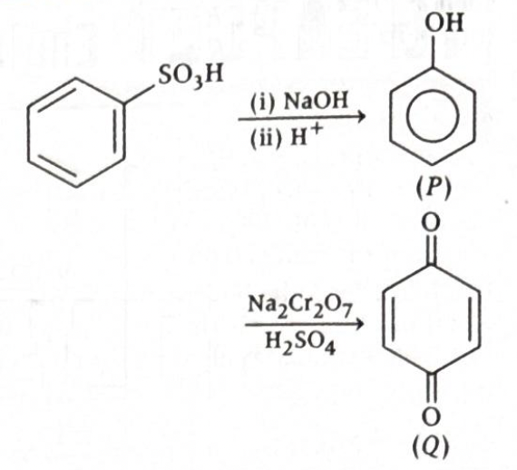
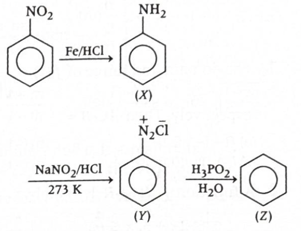